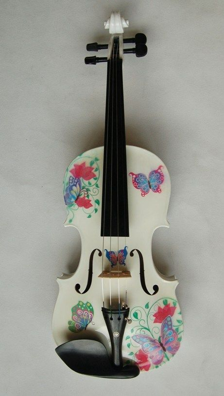
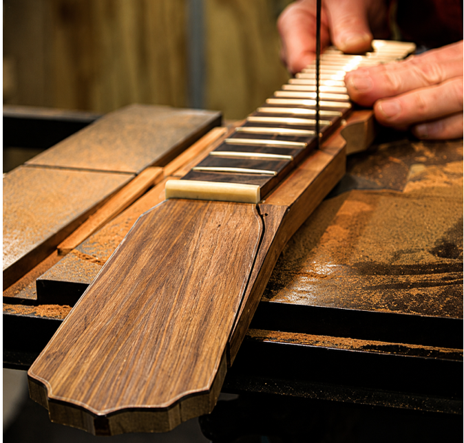
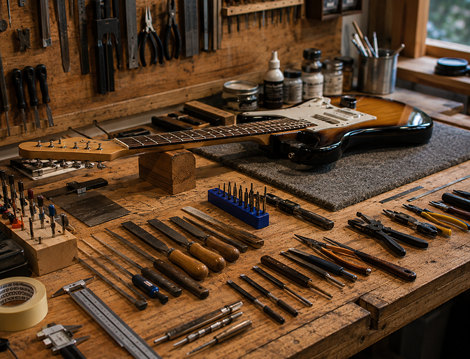
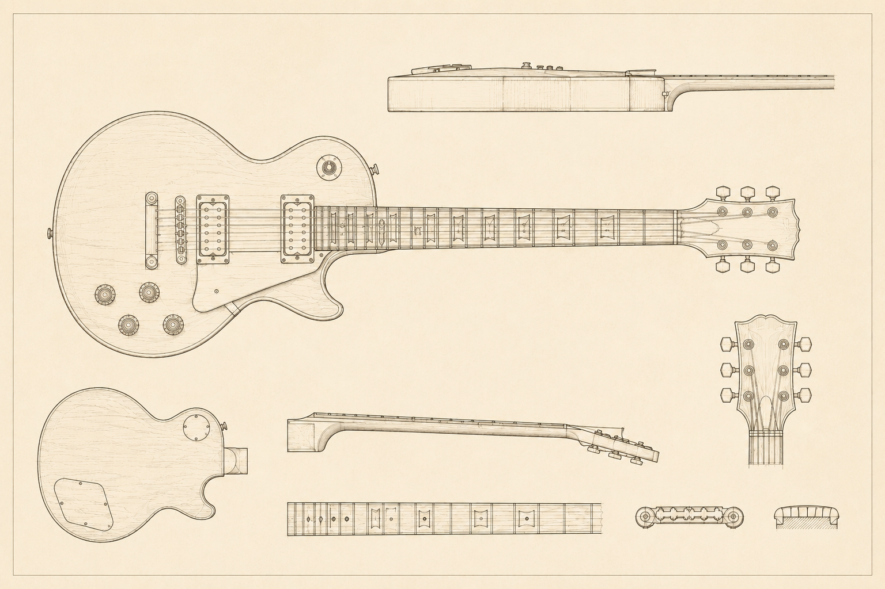
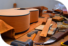
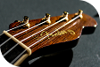
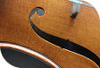

¿Qué significa ser luthier?
Crear
el sonido
desde la
madera.
Aprender haciendo
Aprender luthería es desarrollar una mirada diferente. Observar cada detalle, comprender el funcionamiento de un instrumento y trabajar con precisión para devolverle su mejor sonido. Cada clase combina práctica, técnica y conocimiento aplicado a situaciones reales.

Anatomía de una identidad
Cada parte del instrumento participa de su carácter: la veta natural, el tallado del mástil, la selección de materiales y el bobinado de los micrófonos vuelven único a cada proceso.

Descubrí en

donde nace

cada sonido

en el taller



Instrumentos terminados
Piezas nacidas del proceso: guitarras eléctricas y criollas donde cada decisión material deja una marca visible, táctil y sonora.